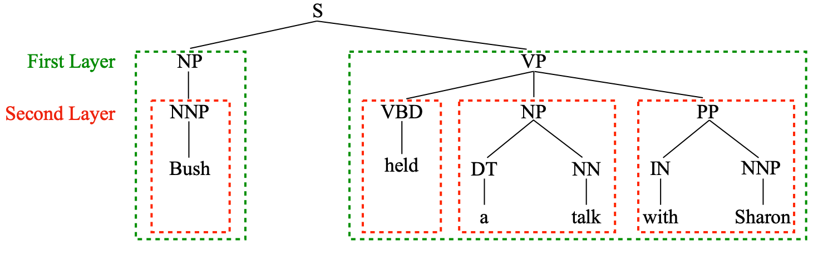
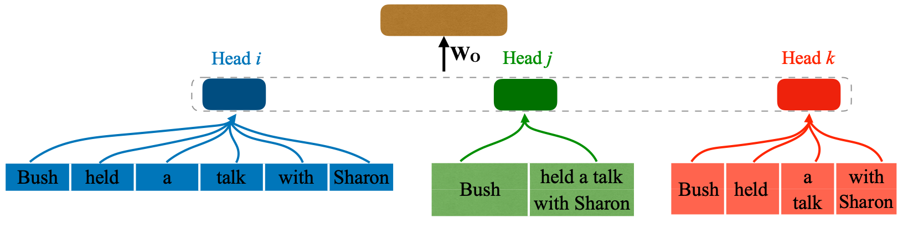
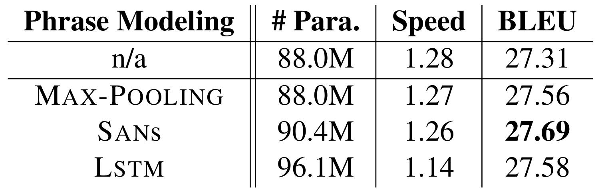
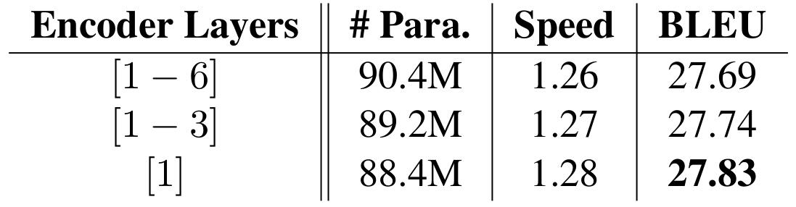
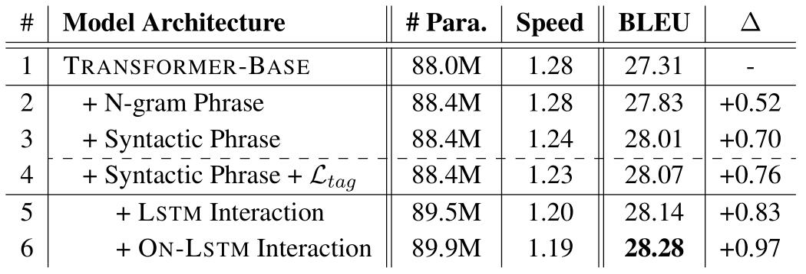
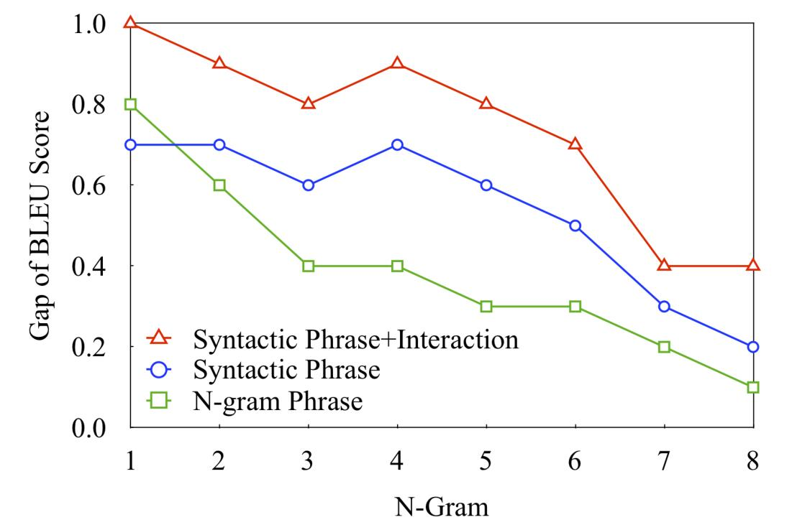
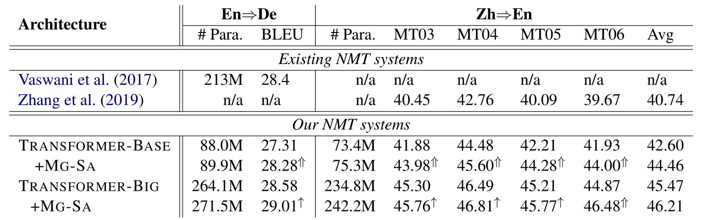
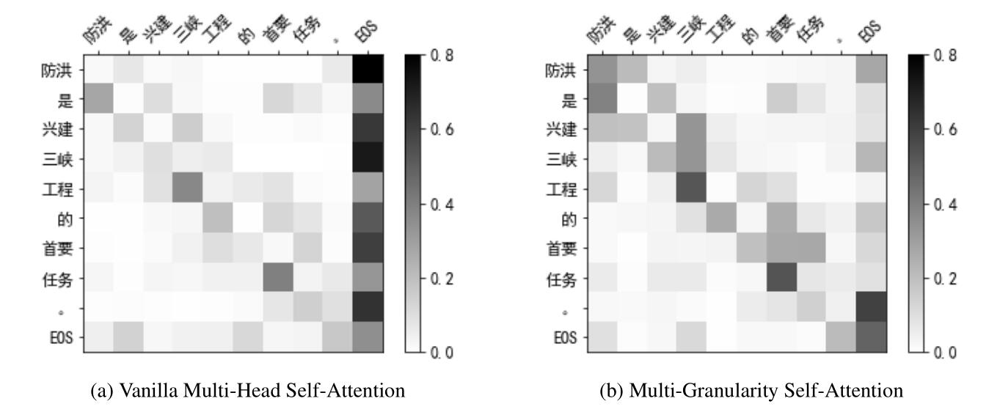
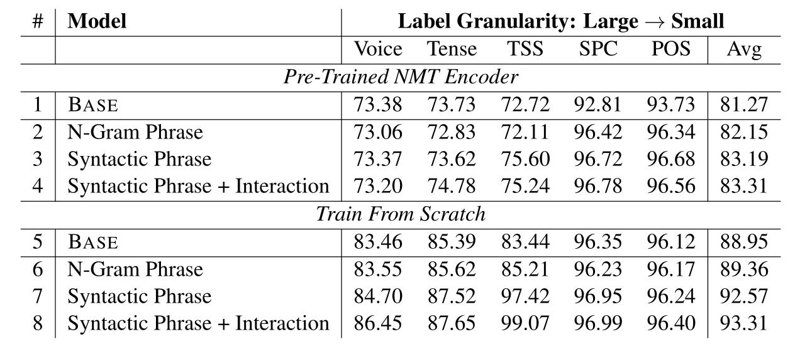

关注公众号【算法码上来】，每日算法干货马上就来！

论文地址
Multi-Granularity Self-Attention for Neural Machine Translation
介绍
现在主流的机器翻译模型基本都是采用多头注意力机制来对句子进行编码解码，但是有一些研究表明，这么多 head 其实并不是都有用的，有些 head 的信息是冗余的，所以本文就想充分利用一下这些冗余的 head 。
此外，统计机器翻译的研究也表明了，对短语的翻译效果可能要好于对单个单词的翻译，所以本文将一些 head 用来建模短语（比如 2-gram 或者 3-gram）。
最后本文在两个翻译任务（WMT14 英译德和 NIST 中译英）上做了实验，效果都要好于普通的 Transformer ，但是运行速度上慢了许多。
多粒度自注意力机制（MG-SA）
整体框架
首先将单词级别的输入 $H = h_1, \ldots, h_n \in \mathbb{R}^{n \times d}$ 映射为短语级别的表示 $H_g \in \mathbb{R}^{p \times d_g}$：
$$
H_g = F_h(H)
$$
其中 $F_h$ 是第 $h$ 个 head 对应的映射函数，针对不同的短语粒度有不同的映射函数。而 $p$ 是短语的个数，不同粒度个数也是不同的。
然后对于第 $h$ 个 head 来说，将 $H, H_g, H_g$ 分别做线性变换，得到自注意力机制的 query、key 和 value：
$$
Q^h, K^h, V^h = HW^h_Q, H_gW^h_K, H_gW^h_V
$$
这样三种向量都被映射到了相同的维度：$Q_h \in \mathbb{R}^{n \times d_h}, K_h \in \mathbb{R}^{p \times d_h}, V_h \in \mathbb{R}^{p \times d_h}$ 。
接着做 self-attention 得到每个单词的输出：
$$
O^h = \text{ATT}(Q^h, K^h)V^h
$$
最后将 $N$ 个 head 输出拼接起来得到了最后的输出：
$$
\text{MG-SA}(H) = [O^1, \ldots, O^N]
$$
短语划分
短语划分有两种方式，一种是 n-gram ，一种是根据句法树划分。n-gram 划分方式就是将句子 $x$ 等分为 $M$ 个短语得到 $P_x = (p_1, \ldots. p_M)$ 。而句法树划分就是按照句法树的不同层次得到不同粒度的短语，如下图所示：

绿色框是第一层，有 2 个短语，粒度比较大。红色框是第二层，有 4 个短语，粒度小一点。
短语组合
每个短语 $p_m$ 的表示可以用不同的网络来得到：
$$
g_m = \text{COM}(p_m)
$$
这里 $\text{COM}$ 函数可以用 CNN、LSTM 或者自注意力网络（SAN）。
最后所有短语的表示记为 $G_x = (g_1, \ldots, g_M)$ 。
短语交互
这些短语之间也像单词一样做一下上下文表示，效果可能会更好：
$$
H_g = \text{REC}(G_x)
$$
这里 $\text{REC}$ 可以选择 LSTM 或者编码结构能力好的 ON-LSTM 。
最后如下图所示，通过短语划分、短语组合、短语交互，模型得到了不同粒度的各个短语表示：

损失函数
这里添加了一个辅助任务用来增强效果：短语标签预测。也就是对于 $G_x = (g_1, \ldots, g_M)$ 而言，在句法树中对应着 $M$ 个短语标签 $T_x = (t_1, \ldots, t_M)$ 。然后用一个线性变换接 softmax 来预测标签的概率：
$$
p = softmax(W_t g_i + b_t)
$$
最后标签预测的损失函数就是：
$$
\mathcal{L}_{tag} = -\sum_{i=1}^M{t_i \log p(t_i)}
$$
最终的损失函数还得再加上机器翻译的损失：
$$
\mathcal{L} = -\sum_{i=1}^L{y_i \log P(y_i)} + \lambda \mathcal{L}_{tag}
$$
这里的 $y_i$ 就是机器翻译的输出单词，$\lambda$ 在实验中设置为了 $0.001$。
实验
模型是在 Transformer 基础上修改的，把四分之一的 head 还用来做单词级别的 self-attention 。对于 n-gram 划分来说，四分之三的 head 分别用来做 2-gram、3-gram 和 4-gram 短语的 self-attention 。对于句法树短语划分来说，四分之三的 head 正好对应了最高的三层短语的 self-attention 。
实验主要得出了三点结论，如果不想看细节的，可以只看结论了：
- 融入了 MG-SA 的 Transformer 的确提高了机器翻译的 BLUE 得分。
- MG-SA 确实可以促进目标短语的生成。
- MG-SA 确实可以捕捉到不同粒度的短语信息。
不同短语组合策略

可以看出三种策略效果都比普通的 Transformer 好，SAN 的效果最好，所以后面实验都用 SAN 。
不同 encoder 层

MG-SA 用的层数越低效果越好，只用在最低层上效果最好（可能是因为直接和单词表示接触，对短语建模更有利），所以后面实验都只用到最低层上。
短语划分、标签监督和短语交互策略影响

这个也不用过多解释，说明了句法树划分短语比 n-gram 划分短语效果好，短语标签预测辅助任务确实有用，用 ON-LSTM 融合短语确实要更好。
输出 n-gram 性能提升

通过对翻译结果的 n-gram 的 BLEU 得分进行分析，可以看出几种 MG-SA 的变体效果都是好于普通的 Transformer 的，说明了确实可以促进目标短语的生成。
主要结果

无论是 Transformer 的 base 还是 large 版本，加上 MG-SA 之后效果都有较大提升，base 版本加上去之后效果甚至逼近了 large 版本，同时参数量并没有多太多。
attention 可视化

可以看出，普通的 Transformer（左边）每个词主要聚焦于前后一个词和句子结束标记，而 MG-SA 则大多聚焦于句子的关键词“三峡工程”和“首要任务”。
多粒度标签预测任务

做了 5 个探测任务：Voice（主动被动）、Tense（时态）、TSS（根结点下层标签序列预测）、SPC（单词的最小包含短语标签）和 POS（词性标注）。
模型就是在 MG-SA 的 encoder 上面接了一个 MLP ，然后做分类。encoder 分为两种，一种是固定参数，用 NMT 训练好的 encoder ，一种是重新训练 encoder 。
主要得到以下几点结论：
- 重新训练 encoder 结果比直接用 NMT 的 encoder 效果提升大（除了 SPC 和 POS）。
- 用句法树划分短语效果比 n-gram 划分短语效果好。
- 用 NMT 的 encoder 时，只有 SPC 和 POS 效果提升大（主要这两个任务粒度小，都是单词级别的，任务很简单）。
- 重新训练 encoder 时前三个任务有提升（因为粒度比较大，而后两个仅靠 MLP 就能学的很好了）。
结论
本文提出了一种多粒度的自注意力机制，将其加入到了 Transformer 的 encoder 中。不仅仅是机器翻译任务，其他许多任务例如阅读理解、语言推理、情感分类等都可以用上这种方法，更好的融入短语结构信息。
其实这篇和 Tree Transformer: Integrating Tree Structures into Self-Attention 挺类似的，都是在 Transformer 的 self-attention 上面做了手脚，加入了一些结构上的信息，增强 encoder 的编码能力。